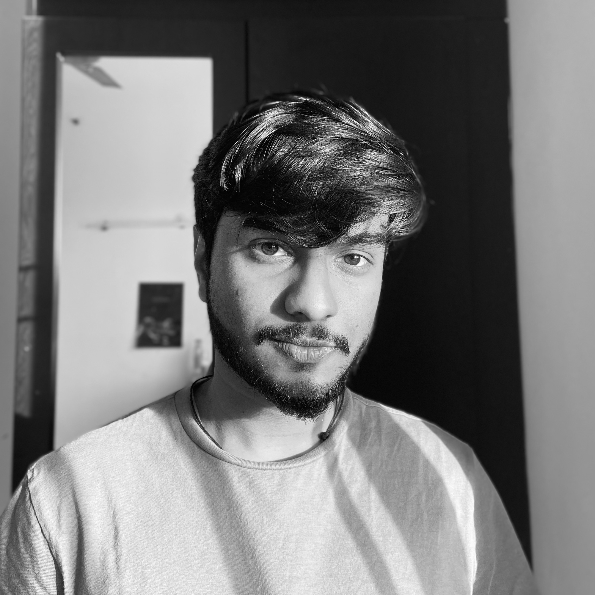

I'm an undergraduate student in my third year at SRM University in India. I am advised by Dr Saad Yunus Sait and Dr Athira M. Nambiar for my undergraduate study on SCAN-QA.

Developing and researching on deep learning methodologies to derive out and construct 3D data out of given 2D information. Current research endeavours involve Neural Radiance Fields, Multi-view Stereo Reconstruction and 6DoF Pose Estimation. Other research aspects involve physics based deep learning research focused on experiments conducted in CERN & Fermilab.
clean-usnob Parsify-Compiler : A culmination of small-scale compiler phases
Aman Agarwal, Mihir Tripathy
Compiler Design, Coursework, SRM University, 2023
Design an intermediate code generation phase for a custom compiler.
Presentation Report
clean-usnob Producing Colorful Point Clouds via Smartphone cameras
Aman Agarwal
Artificial Intelligence, Coursework, SRM University, 2023
Using the methods of Structure from Motion designed for calibrated Smartphone lenses via Multiplanar Calibration to create colorful 3D Point clouds .
clean-usnob Diffusion Models for Detector Simulation (Ongoing)
Aman Agarwal
Next Tech Lab , SRM University, 2023
Training a classifier for ECAL and HCAL channels out of Track images of quark/gluon events and furthermore training a diffusion model on it.
Current progress involves successfully extracting out the two channels out of the Track Images.